Účinkující
Řečníci, lektoři, hudebníci, umělci a e-sportové týmy z 19 zemí.
Hledat, filtrovat a řadit
Zobrazeno 67 z 67 účinkujících

Adam Řezníček
E-sportový komentátor
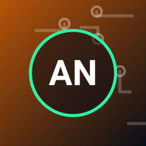
HvězdaAigerim Nurlanova
Konstruktérka malých satelitů
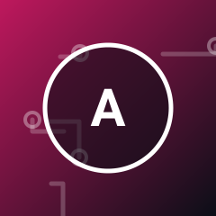
Algoritmia
Live coding – hudba programovaná naživo
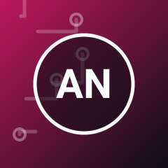
Alžběta Nováčková
Lektorka kreativního programování
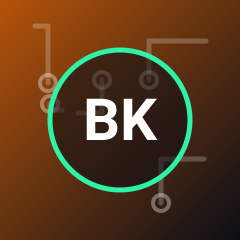
HvězdaBarbora Kolmanová
Robotička, zakladatelka dílny Krokomat
Bitová Hloubka
Chiptune projekt
Bohumil Trnavský
Odborník na energetickou náročnost IT
Chiara Bellandi
Učitelka informatiky a autorka výukových materiálů
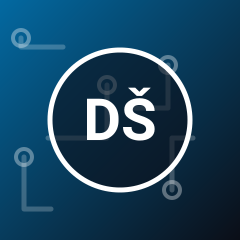
Daniela Štorková
UX výzkumnice
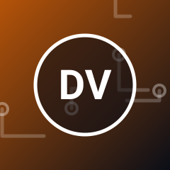
Dietrich Vogelsang
Inženýr, stavební 3D tisk
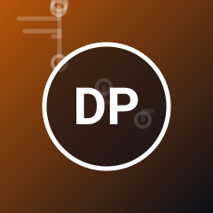
Dílna Pájka
Otevřená elektronická dílna
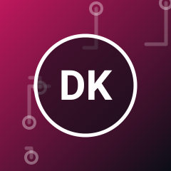
DJ Kernel Panic
Techno DJ
- Hvězda
Elena Havránková
Výzkumnice strojového učení, Laboratoř otevřené inteligence
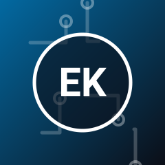
Emre Kahraman
Nevidomý vývojář a propagátor přístupnosti
Filip Dostálek
Vizuální umělec, programování obrazu naživo
Glitch Babylon
Breakbeat a glitch
Hana Šimůnková
Návrhářka nositelné elektroniky
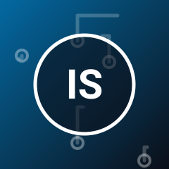
Ingrid Solheim
Designérka návrhových systémů
Jakub Tesařík
Lektor robotiky pro děti
Johana Peřinová
Psycholožka, digitální návyky
Jonáš Vrbata
Frontendový vývojář a konzultant přístupnosti
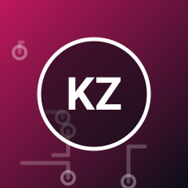
Katja Zimmerlin
Generativní výtvarnice
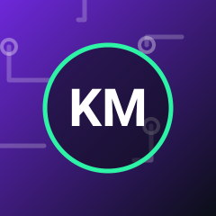
HvězdaKenji Moriwaki
Robotik, výzkum učení robotů od lidí
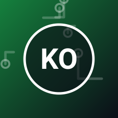
Kolektiv Osmibit
Sběratelé a opraváři historických počítačů
Krakowskie Smoki
E-sportový tým z Krakova
Kristýna Malátová
Etická hackerka
Lars Hedenskog
Kryptograf
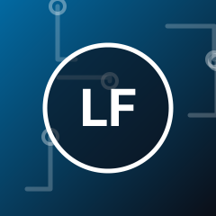
Lucía Ferrandis
Vývojářka, WebAssembly a systémové programování
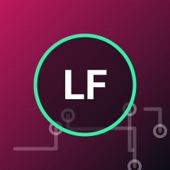
HvězdaLumen Field
Audiovizuální elektronický projekt
Magdaléna Jirsová
Technologická novinářka a moderátorka
Marek Zdráhal
Platformní inženýr
Marie Kutálková
Autorka interaktivních instalací
- Hvězda
Matteo Calvaresi
Propagátor otevřeného hardwaru
Mirela Dragomir
Inženýrka počítačového vidění
Modulární Morava
Trio modulárních syntezátorů
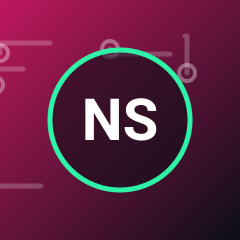
HvězdaNeonová Sova
Synthwave duo
- Hvězda
Ngozi Adebayo-Lindqvist
Výzkumnice interpretovatelnosti umělé inteligence
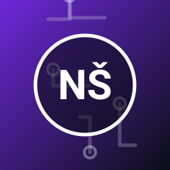
Nikola Šafránková
Lektorka práce s jazykovými modely
Oisín Gallagher-Byrne
Vývojář webových aplikací, které fungují offline
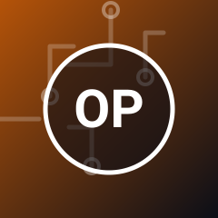
Ondřej Pazdera
Opravář elektroniky a zastánce práva na opravu
Orchestr Rozbitých Tiskáren
Hudební těleso z vyřazené elektroniky
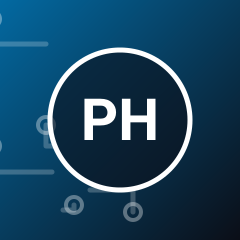
Patrik Hruboň
Správce open source knihoven
Petr Luňáček
Lektor bezpečnostních soutěží
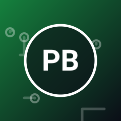
Pixel Babička
Retro streamerka a moderátorka
- Hvězda
Poslední Commit
Indie-elektronická kapela
Radim Koutecký
Specialista na rychlost webu
Rafael Monteverde
Specialista na sociální inženýrství
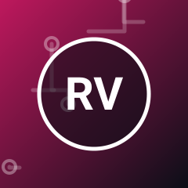
Ráno v Serverovně
Ambientní projekt
Robin Vacula
Lektor vývojářských nástrojů
Sára Benešovská
Datová novinářka
Simona Rybářová
Kariérní poradkyně pro IT
Sine Qua Nonet
Electro-jazzový nonet
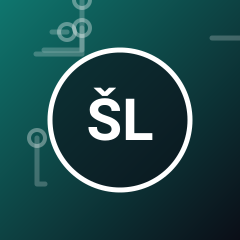
Štěpán Louda
Popularizátor dějin techniky

Stříbrní Lvi
E-sportový tým z Prahy
Studio Mlha
Nezávislé herní studio z Brna
Subnet Mask
Drum and bass
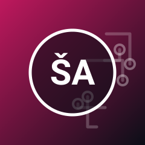
Šum a Signál
Experimentální elektronické duo
Tatranskí Rysi
E-sportový tým z Popradu

Team Nordwind
E-sportový tým z Hamburku
Tereza Vaňousová
Herní designérka

Tomasz Wieliczko
Datový inženýr a autor otevřených nástrojů pro zpracování dat
Viktor Hlaváčik
Zakladatel technologického startupu
Vojtěch Skřivan
Počítačový lingvista
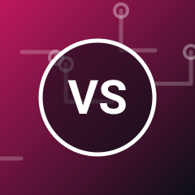
Voltage Sisters
Electro-popové trio
Wanjiru Kamau-Stein
Vývojářka mobilních aplikací
Yuki Tanabe-Hart
Scenáristka her
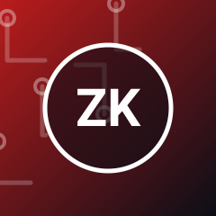
Zuzana Križanová
Právnička, digitální práva a soukromí
Nikdo neodpovídá zadání. Zkuste jiné jméno nebo zrušte filtry.